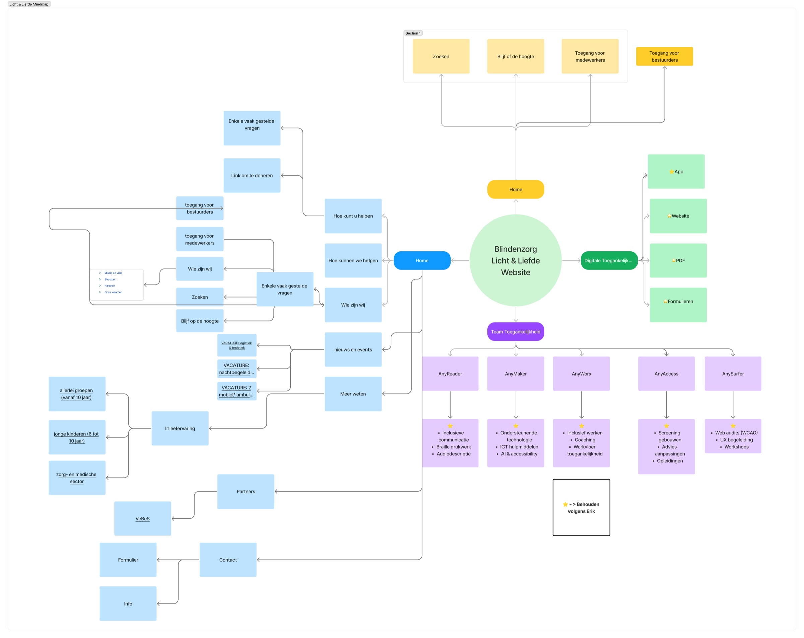
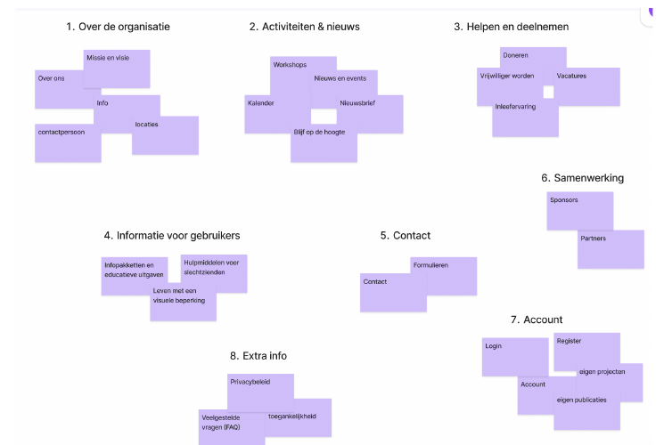
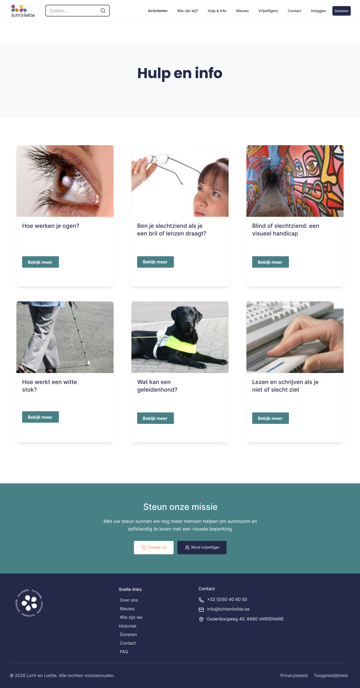

UX Research & UX/UI Design · UCD II
Licht & Liefde
Een duidelijkere weg naar hulp en informatie.
Een schoolproject voor een echte organisatie. Met drie studenten onderzochten we hoe bezoekers hun weg vinden op de website van Blindenzorg Licht en Liefde.
01 / Context
Veel informatie. Moeilijk je weg vinden.
Mensen met een visuele beperking, naasten en vrijwilligers zoeken elk iets anders. Op de bestaande website overlapten categorieën en waren pagina’s moeilijk terug te vinden. Onze opdracht: de inhoud begrijpelijker organiseren en de nieuwe structuur testen.
Als teamlead hielp ik het onderzoek organiseren en werkte ik mee aan card sorting, wireframes en gebruikerstesten.
- Context
- Groepsproject · UCD II · echte organisatie
- Rol
- Team lead & UX/UI Designer
- Team
- 3 studenten
- Aanpak
- Analyse, card sorting, informatiearchitectuur en 6 gebruikerstesten
- Resultaat
- Interactief desktopprototype
Bekijk de analyse van de bestaande website

02 / Onderzoek
Hoe groeperen bezoekers de inhoud?
We voerden een open card sort uit met drie deelnemers. Elk teamlid begeleidde één sessie. Deelnemers groepeerden de websiteonderdelen en benoemden hun categorieën zelf.

De bezoeker denkt vanuit een doel.
De labels verschilden, maar doelen keerden terug: hulp vinden, deelnemen of de organisatie ondersteunen. Dat werd het vertrekpunt voor de nieuwe navigatie.
03 / Nieuwe structuur
Navigatie vanuit bezoekdoelen.
We groepeerden verwante inhoud en gaven belangrijke acties een eigen route. Zo hoefden bezoekers minder te zoeken tussen overlappende categorieën.
04 / Ontwerp
Van structuur naar schermen.
We werkten de navigatie uit in een klikbaar desktopprototype. De homepage biedt duidelijke ingangen; hulp en contact krijgen een vaste, herkenbare plek. Open een scherm om het volledige ontwerp te bekijken.



05 / Gebruikerstest
Zes deelnemers. Concrete verbeterpunten.
We testten het prototype met zes deelnemers: drie sessies werden door de volledige groep gemodereerd, drie tests werden apart uitgevoerd. We observeerden waar mensen twijfelden bij dezelfde zes kerntaken.
Bekijk de zes testtaken
- Informatie over een visuele beperking vinden
- Vrijwilliger worden
- Een workshop of activiteit zoeken
- Contact opnemen
- Een donatie starten
- De historiek terugvinden
Workshops onder activiteiten
Deelnemers twijfelden tussen Activiteiten en Nieuws & events.
Workshops kregen een plek onder Activiteiten, met een scherper onderscheid tussen activiteiten en nieuws.
Het organisatieverhaal dichterbij
De historiek werd onder Wie zijn wij verwacht, maar zat te diep.
We verkortten de route en maakten het organisatieverhaal zichtbaarder.
Duidelijkere acties en tekst
Actieknoppen verschilden in zichtbaarheid. Een deelnemer benoemde kleine tekst en te veel keuzes.
We vereenvoudigden teksten en stemden titels en actieknoppen beter op elkaar af.
Een vertrouwde plek behouden
Contactgegevens en het adres werden snel in de footer gevonden.
We behielden die voorspelbare plek. Niet elk onderdeel vroeg om een nieuwe oplossing.
06 / Resultaat & reflectie
Een onderbouwd prototype. Een andere blik op structuur.
Het resultaat is een interactief desktopprototype met een nieuwe informatiearchitectuur en verfijningen op basis van gebruikerstesten. Het werd niet als officiële website gelanceerd; we hebben dus geen meetbare impact op echte bezoekers vastgesteld.
Wat ik meeneem
Als teamlead leerde ik onderzoek, feedback en ontwerpbeslissingen samenbrengen. Vooral het testen bleef hangen: een label kan voor ons logisch klinken, terwijl een bezoeker er iets anders verwacht. Ik wil die aannames eerder toetsen en mijn keuzes blijven onderbouwen met wat mensen daadwerkelijk doen.